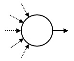
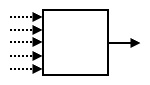
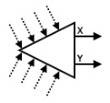

所谓机械娃娃，是能够自动地重复特定运动序列的娃娃。在日本，很多机械娃娃在古代就造出来了。机械娃娃的运动被一个由多个器件组成的管路所控制。这些器件通过管道连在一起。每个器件都有一个或两个出口，而且可以有任意多的（也可以为零）的入口。每个管道都从某个器件的出口连到同一器件或其他器件的入口。每个入口都连接恰好一个管道，而每个出口也都连接恰好一个管道。
为了描述娃娃是如何运动的，设想有一个球放在这些器件之一的上面。这个球在管路中穿行。在穿行的每一步，它从所在器件的一个出口离开该器件，沿着连接该出口的管道，进入管道另一头所连接的器件。
器件有三种类型：起点、 触发器和开关。总共有恰好一个起点，$M$个触发器和 $S$ 个开关 ($S$ 可以为 $0$)。开关的数量 $S$ 要由你来定。每个器件都有唯一的序列号。
起点是球最初所在的那个器件。它有一个出口。它的序列号是 $0$ 。
一旦球进入某个触发器，就会让娃娃做某个特定运动。每个触发器都有一个出口。触发器的序列号是从 $1$ 到 $M$。
每个开关都有两个出口，被记为 $\texttt X$ 和 $\texttt Y$。开关的状态或者为 $\texttt X$，或者为 $\texttt Y$。在球进入某个开关后，它会从开关的当前状态所对应的出口离开。此后开关将切换为另一状态。最初，所有开关的状态都是 $\texttt X$。开关的序列号是从 $-1$ 到 $-S$。
现给定触发器的数量 $M$。再给你一个长度为 $N$ 的序列 $A$，序列的每个元素都是某个触发器的序列号。每个触发器会在序列 $A$ 中出现若干次 (也可能是零次)。你的任务是设计一个管路，以满足如下条件：
球在若干步之后返回到起点。
当球首次返回到起点时，所有开关的状态都是 $\texttt X$。
在球首次返回到起点时，此前它进入所有触发器的总次数恰好为 $ N $。这些被进入过的触发器，其序列号按照被球经过的顺序依次为 $A_0, A_1, \cdots, A_{N-1}$。
设 $P$ 为球首次返回到起点时，球所引起的所有开关状态切换的总次数。$P$ 不能超过 $2 \times 10^7$。
同时，你不要用太多的开关。
你需要实现下面的过程。
void create_circuit(int M, std::vector <int> A)
M：触发器数量，保证 $M \leq 10^5$。A：长度为 $N$ ($N \leq 2 \times 10^5$) 的数组，其中按照球进入的顺序，给出了被进入的触发器的序列号。A.size()。你的程序需要调用下面的过程来作答。
void answer(std::vector <int> C, std::vector <int> X, std::vector <int> Y)
C：长度为 $M + 1$ 的数组。器件 $i$ ($0 \leq i \leq M$) 的出口被连到器件 C[i]。X, Y：长度相同的两个数组。这些数组的长度 $S$ 为开关的数量。对于开关 $-j$ ($1 \leq j \leq S$) 来说，其出口 $\texttt X$ 被连到器件 X[j - 1]，而出口 $\texttt Y$ 被连到器件 Y[j - 1]。C、X和Y中的任一元素必须是 $-S$ 到 $M$ 的整数 (包括 $-S$ 和 $M$ )。C、X 和 Y 所表示的管路必须满足题面中的限制条件。由于起点和触发器的出口是唯一的，因此不能指望通过它们来产生分支。因此，唯一能产生分支的器件就是开关了。
注意到每个开关有两个出口我们考虑将开关排成一个满二叉树的形状，每个节点的两个出口指向它的两个子节点，而叶节点放入触发器。
设这是一个深度为 $d$ 的满二叉树，则所有 $2^d$ 个叶节点会按照一定的顺序依次访问。具体地，第 $i$ 次访问的叶节点是第 $\operatorname{rev} \left( i \right)$ 个叶节点，其中 $\operatorname{rev} \left( x \right)$ 表示 $x$ 的位翻转。
因此，如果 $N$ 是 $2$ 的幂 ($N = 2^d$)，则我们可以通过构造一棵深度为 $d$ 的满二叉树，将所需要的触发器按顺序排好即可。
由于最后需要回到起点，因此可以将最后经过的一个触发器直接连向起点，或者将 $0$ (起点) 看做最后一个触发器，变为一个叶节点。
这样容易分析出开关的数量恰好等于 $1 + 2 + 4 + \cdots + 2^{d-1} = 2^d - 1 = N - 1$，满足题目中的限制。
对 $N$ 非 $2$ 的整数次幂的情况，又该怎么处理呢？
首先，如果一个叶节点 $v$ 不需要经过，我们可以直接将 $p_v$ 的对应子节点指向根，从而解决了触发器数量不足的情况。
但是在这种情况下，开关的数量最坏可以达到 $2 N + O \left( 1 \right)$ (当 $N = 2^d + 1$ 时)。
因此，需要优化这个建图过程。
考虑当 $N = 2^d + 1$ 的情况，有几乎一半的叶节点都是不存在的！
因此，对于任何一个节点，如果它的两个子节点中没有一个指向触发器 (即都指向根)，则可以将这个点删去，令它的父节点直接指向根。
可以看出，这恰恰就是线段树区间定位的思想。
我们将所需的 $N$ 个节点安排到线段树的一个 "连续的叶子区间" 上，然后在线段树上对其定位，将所有经过的点当成开关记录下来，未经过的点就直接连向根好了 (动态开点线段树)。
最后再来分析一下开关个数，简单分析一下可知，对于 $N$ 个触发器的情况，开关的个数等于 $N + \left \lfloor \log_2 \left( N - 1 \right) \right \rfloor - \operatorname{popc} \left( N - 1 \right)$ (其中 $\operatorname{popc} \left( n \right)$ 表示 $n$ 的二进制表示中 $1$ 的个数，$\log_2 0 = -1$)，因此是符合要求的。
时间复杂度 $O \left( N \right)$。
#include "doll.h"
#define lg2(x) (31 - __builtin_clz(x))
typedef std::vector <int> vector;
const int N = 530000;
int n, len, Len, cnt = 0;
int rev[N], val[N], lc[N], rc[N];
int build(int L, int R) {
if (R < Len - n) return -1;
if (L == R) return val[L];
int id = ++cnt, M = (L + R - 1) >> 1;
return lc[id] = build(L, M), rc[id] = build(M + 1, R), -id;
}
void create_circuit(int m, vector A) {
int i, *X = lc + 1, *Y = rc + 1;
A.emplace_back(0), n = A.size(), Len = 1 << (len = lg2(n - 1) + 1);
auto it = A.cbegin();
for (i = 0; i < Len; ++i)
if ((rev[i] = rev[i >> 1] >> 1 | (i & 1) << (len - 1)) >= Len - n) val[rev[i]] = *it++;
build(0, Len - 1);
answer(vector(m + 1, -1), vector(X, X + cnt), vector(Y, Y + cnt));
}
坑1：如果把起点当成最后一个 "触发器" 的话 (或者把最后一个触发器连向起点，一样的)，则必须要保证最后一次经过的叶节点是线段树中最后一个叶节点，否则无法保证回到起点时所有开关的状态均为 $\texttt X$。
因此我们在选择一个叶子区间的时候，必须选择一个后缀，而不是前缀或其它。同理，我们必须选择满二叉树而不是一般的线段树，因为一般的线段树无法做到每个叶节点恰好依次访问一遍。
坑2：二叉树中的节点编号是负数，这个细节需要注意一下。